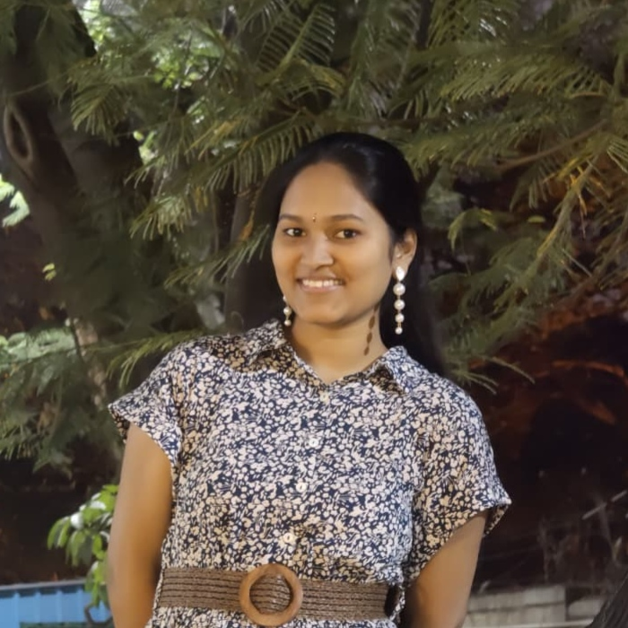

Borra Bhavitha
B.Tech in Mathematics and Computing | Indian Institute of Science, Bengaluru
Mathematics, Computing & AI
View CVAbout
I'm Borra Bhavitha, a B.Tech student in Mathematics and Computing at the Indian Institute of Science, Bengaluru. I'm drawn to Machine Learning, Deep Learning, and Computer Vision, and I enjoy digging into AI research problems and working through challenging technical problem-solving. I like building things that combine rigorous mathematical foundations with practical, well-engineered machine learning systems.
Academic Background
-
B.Tech in Mathematics and Computing
2024 – Present (Expected 2028)Indian Institute of Science, Bengaluru
-
Class XII
2024Narayana Junior College, Kanuru
-
Class X (CBSE)
2022Kennedy High School, Kanuru
Experience
Engineering Intern
May 2026 – July 2026TANUH AI Center for Excellence in Healthcare
Contributing to AI-driven healthcare research under the TANUH AI Center of Excellence by designing, developing, and benchmarking machine learning and deep learning models for mammography-based breast tissue density classification. Research areas include domain adaptation, self-supervised learning, semi-supervised learning, explainable AI, medical image classification, and model generalization.
Projects
Self-Supervised Learning: Representation Analysis
March 2026 – April 2026PyTorch
Implemented SimCLR, MoCo, VICReg, and Barlow Twins. Analyzed robustness to label noise, representation quality, and training dynamics using linear probing and embeddings. Observed improved generalization over supervised learning and sensitivity to early training corruption.
Breast Tissue Density Classification
May 2026 – July 2026Carried out during engineering internship
Implemented and benchmarked ML/DL models for breast tissue density classification from mammograms. Designed domain adaptation, self-supervised, semi-supervised, and contrastive frameworks. Developed DANN-based pipelines (DenseNet121, RegNetY-8GF, NFNet-F3, MAE-ViT, DINOv2, Barlow Twins, Mean Teacher, SupCon). Evaluated SVM/ELM and end-to-end models. Implemented TransMIL. Used Grad-CAM++ and Attention Rollout. Built scalable PyTorch pipelines.
Skills
Programming
- Python
- C (basics)
- Bash
ML/DL
- PyTorch
- Scikit-learn
- NumPy
- Pandas
- Deep Learning
- CNNs
- Vision Transformers
- Self-Supervised Learning
- Semi-Supervised Learning
- Domain Adaptation
- Contrastive Learning
Computer Vision
- OpenCV
- Feature Extraction
- Image Classification
- Data Augmentation
- Explainable AI
Core CS
- Data Structures & Algorithms
- Operating Systems
- Recursion
- Problem Solving
- Competitive Programming
Systems/Tools
- Python-C Integration
- Memory Management
- Algorithm Optimization
- Git
- VS Code
- pydicom
Interests
- Machine Learning
- Deep Learning
- Problem Solving
Contact
- Emailbhavithab@iisc.ac.in
- Emailborrabhavitha@gmail.com
- LinkedInlinkedin.com/in/borra-bhavitha
- GitHubgithub.com/bhavitha1917